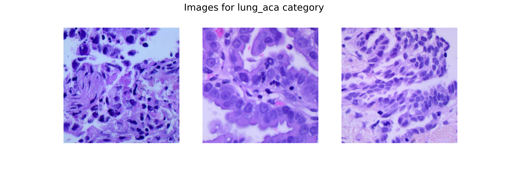
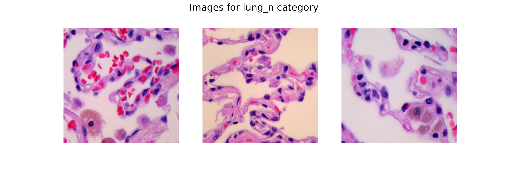
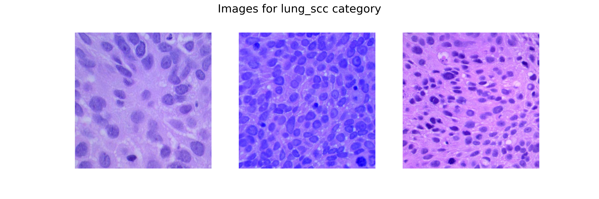
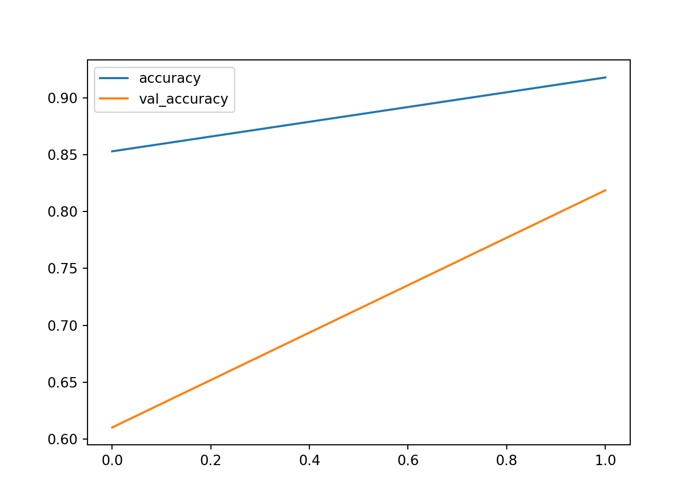
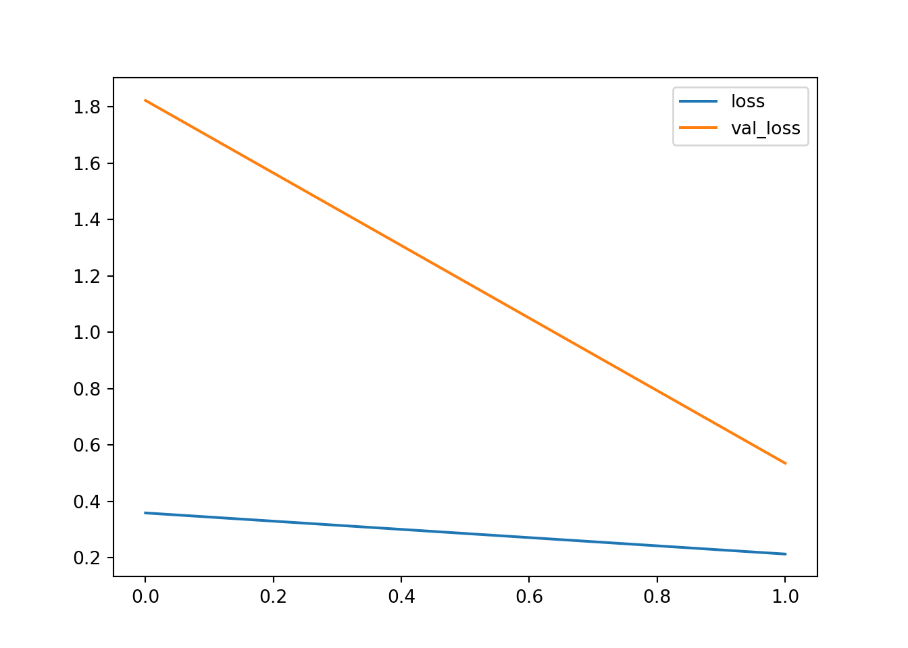

# Load the reticulate package
library(reticulate)
wd <- getwd()
setwd(wd)This is a post with code
import numpy as np
import pandas as pd
import matplotlib.pyplot as plt
from PIL import Image
from glob import glob
from sklearn.model_selection import train_test_split
from sklearn import metrics
import cv2
import gc
import os
import tensorflow as tf
from tensorflow import keras
from keras import layers
import warnings
warnings.filterwarnings('ignore')Importing Dataset
The dataset which we will use here has been taken from -https://www.kaggle.com/datasets/andrewmvd/lung-and-colon-cancer-histopathological-images. This dataset includes 5000 images for three classes of lung conditions:
Normal Class
Lung Adenocarcinomas
Lung Squamous Cell Carcinomas
These images for each class have been developed from 250 images by performing Data Augmentation on them. That is why we won’t be using Data Augmentation further on these images.
# Set the path to the dataset and list the classes
path = os.path.expanduser('~/Desktop/blog/DDTE/data/DLP1/lung_image_sets')
classes = os.listdir(path)
print("Classes found:", classes)Classes found: ['lung_aca', 'lung_n', 'lung_scc']for cat in classes:
image_dir = f'{path}/{cat}'
images = os.listdir(image_dir)
fig, ax = plt.subplots(1, 3, figsize=(15, 5))
fig.suptitle(f'Images for {cat} category', fontsize=20)
for i in range(3):
k = np.random.randint(0, len(images))
img = np.array(Image.open(f'{path}/{cat}/{images[k]}'))
ax[i].imshow(img)
ax[i].axis('off')
plt.show()Text(0.5, 0.98, 'Images for lung_aca category')
<matplotlib.image.AxesImage object at 0x311d35e20>
(-0.5, 767.5, 767.5, -0.5)
<matplotlib.image.AxesImage object at 0x32b153d10>
(-0.5, 767.5, 767.5, -0.5)
<matplotlib.image.AxesImage object at 0x328e4efc0>
(-0.5, 767.5, 767.5, -0.5)
Text(0.5, 0.98, 'Images for lung_n category')
<matplotlib.image.AxesImage object at 0x32b1cbd40>
(-0.5, 767.5, 767.5, -0.5)
<matplotlib.image.AxesImage object at 0x32b19e660>
(-0.5, 767.5, 767.5, -0.5)
<matplotlib.image.AxesImage object at 0x32b19fe60>
(-0.5, 767.5, 767.5, -0.5)
Text(0.5, 0.98, 'Images for lung_scc category')
<matplotlib.image.AxesImage object at 0x311d48050>
(-0.5, 767.5, 767.5, -0.5)
<matplotlib.image.AxesImage object at 0x32b19f020>
(-0.5, 767.5, 767.5, -0.5)
<matplotlib.image.AxesImage object at 0x32b464860>
(-0.5, 767.5, 767.5, -0.5)


IMG_SIZE = 256
SPLIT = 0.2
EPOCHS = 2
BATCH_SIZE = 64
X = []
Y = []
for i, cat in enumerate(classes):
images = glob(f'{path}/{cat}/*.jpeg')
for image in images:
img = cv2.imread(image)
X.append(cv2.resize(img, (IMG_SIZE, IMG_SIZE)))
Y.append(i)
X = np.asarray(X)
one_hot_encoded_Y = pd.get_dummies(Y).valuesX_train, X_val, Y_train, Y_val = train_test_split(X, one_hot_encoded_Y,
test_size = SPLIT,
random_state = 2022)
print(X_train.shape, X_val.shape)(12000, 256, 256, 3) (3000, 256, 256, 3)model = keras.models.Sequential([
layers.Conv2D(filters=32,
kernel_size=(5, 5),
activation='relu',
input_shape=(IMG_SIZE,
IMG_SIZE,
3),
padding='same'),
layers.MaxPooling2D(2, 2),
layers.Conv2D(filters=64,
kernel_size=(3, 3),
activation='relu',
padding='same'),
layers.MaxPooling2D(2, 2),
layers.Conv2D(filters=128,
kernel_size=(3, 3),
activation='relu',
padding='same'),
layers.MaxPooling2D(2, 2),
layers.Flatten(),
layers.Dense(256, activation='relu'),
layers.BatchNormalization(),
layers.Dense(128, activation='relu'),
layers.Dropout(0.3),
layers.BatchNormalization(),
layers.Dense(3, activation='softmax')
])model.summary()Model: "sequential"
┏━━━━━━━━━━━━━━━━━━━━━━━━━━━━━━━━━┳━━━━━━━━━━━━━━━━━━━━━━━━┳━━━━━━━━━━━━━━━┓
┃ Layer (type) ┃ Output Shape ┃ Param # ┃
┡━━━━━━━━━━━━━━━━━━━━━━━━━━━━━━━━━╇━━━━━━━━━━━━━━━━━━━━━━━━╇━━━━━━━━━━━━━━━┩
│ conv2d (Conv2D) │ (None, 256, 256, 32) │ 2,432 │
├─────────────────────────────────┼────────────────────────┼───────────────┤
│ max_pooling2d (MaxPooling2D) │ (None, 128, 128, 32) │ 0 │
├─────────────────────────────────┼────────────────────────┼───────────────┤
│ conv2d_1 (Conv2D) │ (None, 128, 128, 64) │ 18,496 │
├─────────────────────────────────┼────────────────────────┼───────────────┤
│ max_pooling2d_1 (MaxPooling2D) │ (None, 64, 64, 64) │ 0 │
├─────────────────────────────────┼────────────────────────┼───────────────┤
│ conv2d_2 (Conv2D) │ (None, 64, 64, 128) │ 73,856 │
├─────────────────────────────────┼────────────────────────┼───────────────┤
│ max_pooling2d_2 (MaxPooling2D) │ (None, 32, 32, 128) │ 0 │
├─────────────────────────────────┼────────────────────────┼───────────────┤
│ flatten (Flatten) │ (None, 131072) │ 0 │
├─────────────────────────────────┼────────────────────────┼───────────────┤
│ dense (Dense) │ (None, 256) │ 33,554,688 │
├─────────────────────────────────┼────────────────────────┼───────────────┤
│ batch_normalization │ (None, 256) │ 1,024 │
│ (BatchNormalization) │ │ │
├─────────────────────────────────┼────────────────────────┼───────────────┤
│ dense_1 (Dense) │ (None, 128) │ 32,896 │
├─────────────────────────────────┼────────────────────────┼───────────────┤
│ dropout (Dropout) │ (None, 128) │ 0 │
├─────────────────────────────────┼────────────────────────┼───────────────┤
│ batch_normalization_1 │ (None, 128) │ 512 │
│ (BatchNormalization) │ │ │
├─────────────────────────────────┼────────────────────────┼───────────────┤
│ dense_2 (Dense) │ (None, 3) │ 387 │
└─────────────────────────────────┴────────────────────────┴───────────────┘
Total params: 33,684,291 (128.50 MB)
Trainable params: 33,683,523 (128.49 MB)
Non-trainable params: 768 (3.00 KB)keras.utils.plot_model(
model,
show_shapes = True,
show_dtype = True,
show_layer_activations = True
)model.compile(
optimizer = 'adam',
loss = 'categorical_crossentropy',
metrics = ['accuracy']
)from keras.callbacks import EarlyStopping, ReduceLROnPlateau
class myCallback(tf.keras.callbacks.Callback):
def on_epoch_end(self, epoch, logs={}):
if logs.get('val_accuracy') > 0.90:
print('\n Validation accuracy has reached upto \
90% so, stopping further training.')
self.model.stop_training = True
es = EarlyStopping(patience=3,
monitor='val_accuracy',
restore_best_weights=True)
lr = ReduceLROnPlateau(monitor='val_loss',
patience=2,
factor=0.5,
verbose=1)history = model.fit(X_train, Y_train,
validation_data = (X_val, Y_val),
batch_size = BATCH_SIZE,
epochs = EPOCHS,
verbose = 1,
callbacks = [es, lr, myCallback()])Epoch 1/2
[1m 1/188[0m [37m━━━━━━━━━━━━━━━━━━━━[0m [1m10:54[0m 3s/step - accuracy: 0.4219 - loss: 1.4797
[1m 2/188[0m [37m━━━━━━━━━━━━━━━━━━━━[0m [1m5:31[0m 2s/step - accuracy: 0.4844 - loss: 1.3451
[1m 3/188[0m [37m━━━━━━━━━━━━━━━━━━━━[0m [1m5:17[0m 2s/step - accuracy: 0.5243 - loss: 1.2268
[1m 4/188[0m [37m━━━━━━━━━━━━━━━━━━━━[0m [1m5:18[0m 2s/step - accuracy: 0.5544 - loss: 1.1356
[1m 5/188[0m [37m━━━━━━━━━━━━━━━━━━━━[0m [1m5:15[0m 2s/step - accuracy: 0.5754 - loss: 1.0809
[1m 6/188[0m [37m━━━━━━━━━━━━━━━━━━━━[0m [1m5:17[0m 2s/step - accuracy: 0.5919 - loss: 1.0343
[1m 7/188[0m [37m━━━━━━━━━━━━━━━━━━━━[0m [1m5:35[0m 2s/step - accuracy: 0.6046 - loss: 0.9978
[1m 8/188[0m [37m━━━━━━━━━━━━━━━━━━━━[0m [1m5:41[0m 2s/step - accuracy: 0.6152 - loss: 0.9657
[1m 9/188[0m [37m━━━━━━━━━━━━━━━━━━━━[0m [1m5:32[0m 2s/step - accuracy: 0.6240 - loss: 0.9379
[1m 10/188[0m [32m━[0m[37m━━━━━━━━━━━━━━━━━━━[0m [1m5:29[0m 2s/step - accuracy: 0.6321 - loss: 0.9136
[1m 11/188[0m [32m━[0m[37m━━━━━━━━━━━━━━━━━━━[0m [1m5:27[0m 2s/step - accuracy: 0.6390 - loss: 0.8923
[1m 12/188[0m [32m━[0m[37m━━━━━━━━━━━━━━━━━━━[0m [1m5:25[0m 2s/step - accuracy: 0.6454 - loss: 0.8740
[1m 13/188[0m [32m━[0m[37m━━━━━━━━━━━━━━━━━━━[0m [1m5:24[0m 2s/step - accuracy: 0.6513 - loss: 0.8575
[1m 14/188[0m [32m━[0m[37m━━━━━━━━━━━━━━━━━━━[0m [1m5:21[0m 2s/step - accuracy: 0.6567 - loss: 0.8428
[1m 15/188[0m [32m━[0m[37m━━━━━━━━━━━━━━━━━━━[0m [1m5:17[0m 2s/step - accuracy: 0.6616 - loss: 0.8295
[1m 16/188[0m [32m━[0m[37m━━━━━━━━━━━━━━━━━━━[0m [1m5:15[0m 2s/step - accuracy: 0.6661 - loss: 0.8177
[1m 17/188[0m [32m━[0m[37m━━━━━━━━━━━━━━━━━━━[0m [1m5:14[0m 2s/step - accuracy: 0.6701 - loss: 0.8068
[1m 18/188[0m [32m━[0m[37m━━━━━━━━━━━━━━━━━━━[0m [1m5:11[0m 2s/step - accuracy: 0.6737 - loss: 0.7966
[1m 19/188[0m [32m━━[0m[37m━━━━━━━━━━━━━━━━━━[0m [1m5:08[0m 2s/step - accuracy: 0.6769 - loss: 0.7870
[1m 20/188[0m [32m━━[0m[37m━━━━━━━━━━━━━━━━━━[0m [1m5:06[0m 2s/step - accuracy: 0.6799 - loss: 0.7779
[1m 21/188[0m [32m━━[0m[37m━━━━━━━━━━━━━━━━━━[0m [1m5:04[0m 2s/step - accuracy: 0.6828 - loss: 0.7691
[1m 22/188[0m [32m━━[0m[37m━━━━━━━━━━━━━━━━━━[0m [1m5:01[0m 2s/step - accuracy: 0.6851 - loss: 0.7613
[1m 23/188[0m [32m━━[0m[37m━━━━━━━━━━━━━━━━━━[0m [1m4:59[0m 2s/step - accuracy: 0.6874 - loss: 0.7541
[1m 24/188[0m [32m━━[0m[37m━━━━━━━━━━━━━━━━━━[0m [1m5:00[0m 2s/step - accuracy: 0.6896 - loss: 0.7472
[1m 25/188[0m [32m━━[0m[37m━━━━━━━━━━━━━━━━━━[0m [1m4:59[0m 2s/step - accuracy: 0.6916 - loss: 0.7405
[1m 26/188[0m [32m━━[0m[37m━━━━━━━━━━━━━━━━━━[0m [1m4:57[0m 2s/step - accuracy: 0.6936 - loss: 0.7341
[1m 27/188[0m [32m━━[0m[37m━━━━━━━━━━━━━━━━━━[0m [1m4:54[0m 2s/step - accuracy: 0.6956 - loss: 0.7280
[1m 28/188[0m [32m━━[0m[37m━━━━━━━━━━━━━━━━━━[0m [1m4:51[0m 2s/step - accuracy: 0.6976 - loss: 0.7220
[1m 29/188[0m [32m━━━[0m[37m━━━━━━━━━━━━━━━━━[0m [1m4:49[0m 2s/step - accuracy: 0.6996 - loss: 0.7163
[1m 30/188[0m [32m━━━[0m[37m━━━━━━━━━━━━━━━━━[0m [1m4:47[0m 2s/step - accuracy: 0.7016 - loss: 0.7107
[1m 31/188[0m [32m━━━[0m[37m━━━━━━━━━━━━━━━━━[0m [1m4:45[0m 2s/step - accuracy: 0.7036 - loss: 0.7052
[1m 32/188[0m [32m━━━[0m[37m━━━━━━━━━━━━━━━━━[0m [1m4:43[0m 2s/step - accuracy: 0.7055 - loss: 0.7002
[1m 33/188[0m [32m━━━[0m[37m━━━━━━━━━━━━━━━━━[0m [1m4:41[0m 2s/step - accuracy: 0.7074 - loss: 0.6956
[1m 34/188[0m [32m━━━[0m[37m━━━━━━━━━━━━━━━━━[0m [1m4:38[0m 2s/step - accuracy: 0.7092 - loss: 0.6912
[1m 35/188[0m [32m━━━[0m[37m━━━━━━━━━━━━━━━━━[0m [1m4:36[0m 2s/step - accuracy: 0.7109 - loss: 0.6868
[1m 36/188[0m [32m━━━[0m[37m━━━━━━━━━━━━━━━━━[0m [1m4:34[0m 2s/step - accuracy: 0.7126 - loss: 0.6827
[1m 37/188[0m [32m━━━[0m[37m━━━━━━━━━━━━━━━━━[0m [1m4:32[0m 2s/step - accuracy: 0.7143 - loss: 0.6785
[1m 38/188[0m [32m━━━━[0m[37m━━━━━━━━━━━━━━━━[0m [1m4:30[0m 2s/step - accuracy: 0.7159 - loss: 0.6746
[1m 39/188[0m [32m━━━━[0m[37m━━━━━━━━━━━━━━━━[0m [1m4:27[0m 2s/step - accuracy: 0.7175 - loss: 0.6708
[1m 40/188[0m [32m━━━━[0m[37m━━━━━━━━━━━━━━━━[0m [1m4:25[0m 2s/step - accuracy: 0.7190 - loss: 0.6671
[1m 41/188[0m [32m━━━━[0m[37m━━━━━━━━━━━━━━━━[0m [1m4:24[0m 2s/step - accuracy: 0.7205 - loss: 0.6636
[1m 42/188[0m [32m━━━━[0m[37m━━━━━━━━━━━━━━━━[0m [1m4:24[0m 2s/step - accuracy: 0.7219 - loss: 0.6602
[1m 43/188[0m [32m━━━━[0m[37m━━━━━━━━━━━━━━━━[0m [1m4:22[0m 2s/step - accuracy: 0.7232 - loss: 0.6571
[1m 44/188[0m [32m━━━━[0m[37m━━━━━━━━━━━━━━━━[0m [1m4:19[0m 2s/step - accuracy: 0.7245 - loss: 0.6540
[1m 45/188[0m [32m━━━━[0m[37m━━━━━━━━━━━━━━━━[0m [1m4:17[0m 2s/step - accuracy: 0.7257 - loss: 0.6510
[1m 46/188[0m [32m━━━━[0m[37m━━━━━━━━━━━━━━━━[0m [1m4:15[0m 2s/step - accuracy: 0.7269 - loss: 0.6480
[1m 47/188[0m [32m━━━━━[0m[37m━━━━━━━━━━━━━━━[0m [1m4:14[0m 2s/step - accuracy: 0.7281 - loss: 0.6452
[1m 48/188[0m [32m━━━━━[0m[37m━━━━━━━━━━━━━━━[0m [1m4:13[0m 2s/step - accuracy: 0.7292 - loss: 0.6424
[1m 49/188[0m [32m━━━━━[0m[37m━━━━━━━━━━━━━━━[0m [1m4:11[0m 2s/step - accuracy: 0.7304 - loss: 0.6396
[1m 50/188[0m [32m━━━━━[0m[37m━━━━━━━━━━━━━━━[0m [1m4:09[0m 2s/step - accuracy: 0.7315 - loss: 0.6369
[1m 51/188[0m [32m━━━━━[0m[37m━━━━━━━━━━━━━━━[0m [1m4:07[0m 2s/step - accuracy: 0.7325 - loss: 0.6343
[1m 52/188[0m [32m━━━━━[0m[37m━━━━━━━━━━━━━━━[0m [1m4:05[0m 2s/step - accuracy: 0.7335 - loss: 0.6318
[1m 53/188[0m [32m━━━━━[0m[37m━━━━━━━━━━━━━━━[0m [1m4:04[0m 2s/step - accuracy: 0.7345 - loss: 0.6293
[1m 54/188[0m [32m━━━━━[0m[37m━━━━━━━━━━━━━━━[0m [1m4:02[0m 2s/step - accuracy: 0.7354 - loss: 0.6270
[1m 55/188[0m [32m━━━━━[0m[37m━━━━━━━━━━━━━━━[0m [1m4:01[0m 2s/step - accuracy: 0.7363 - loss: 0.6247
[1m 56/188[0m [32m━━━━━[0m[37m━━━━━━━━━━━━━━━[0m [1m4:00[0m 2s/step - accuracy: 0.7373 - loss: 0.6224
[1m 57/188[0m [32m━━━━━━[0m[37m━━━━━━━━━━━━━━[0m [1m3:58[0m 2s/step - accuracy: 0.7381 - loss: 0.6202
[1m 58/188[0m [32m━━━━━━[0m[37m━━━━━━━━━━━━━━[0m [1m3:57[0m 2s/step - accuracy: 0.7390 - loss: 0.6182
[1m 59/188[0m [32m━━━━━━[0m[37m━━━━━━━━━━━━━━[0m [1m3:55[0m 2s/step - accuracy: 0.7398 - loss: 0.6161
[1m 60/188[0m [32m━━━━━━[0m[37m━━━━━━━━━━━━━━[0m [1m3:54[0m 2s/step - accuracy: 0.7406 - loss: 0.6141
[1m 61/188[0m [32m━━━━━━[0m[37m━━━━━━━━━━━━━━[0m [1m3:52[0m 2s/step - accuracy: 0.7414 - loss: 0.6122
[1m 62/188[0m [32m━━━━━━[0m[37m━━━━━━━━━━━━━━[0m [1m3:50[0m 2s/step - accuracy: 0.7422 - loss: 0.6103
[1m 63/188[0m [32m━━━━━━[0m[37m━━━━━━━━━━━━━━[0m [1m3:48[0m 2s/step - accuracy: 0.7430 - loss: 0.6084
[1m 64/188[0m [32m━━━━━━[0m[37m━━━━━━━━━━━━━━[0m [1m3:46[0m 2s/step - accuracy: 0.7437 - loss: 0.6066
[1m 65/188[0m [32m━━━━━━[0m[37m━━━━━━━━━━━━━━[0m [1m3:44[0m 2s/step - accuracy: 0.7445 - loss: 0.6047
[1m 66/188[0m [32m━━━━━━━[0m[37m━━━━━━━━━━━━━[0m [1m3:42[0m 2s/step - accuracy: 0.7452 - loss: 0.6030
[1m 67/188[0m [32m━━━━━━━[0m[37m━━━━━━━━━━━━━[0m [1m3:40[0m 2s/step - accuracy: 0.7459 - loss: 0.6012
[1m 68/188[0m [32m━━━━━━━[0m[37m━━━━━━━━━━━━━[0m [1m3:38[0m 2s/step - accuracy: 0.7466 - loss: 0.5995
[1m 69/188[0m [32m━━━━━━━[0m[37m━━━━━━━━━━━━━[0m [1m3:36[0m 2s/step - accuracy: 0.7473 - loss: 0.5978
[1m 70/188[0m [32m━━━━━━━[0m[37m━━━━━━━━━━━━━[0m [1m3:34[0m 2s/step - accuracy: 0.7480 - loss: 0.5961
[1m 71/188[0m [32m━━━━━━━[0m[37m━━━━━━━━━━━━━[0m [1m3:34[0m 2s/step - accuracy: 0.7487 - loss: 0.5945
[1m 72/188[0m [32m━━━━━━━[0m[37m━━━━━━━━━━━━━[0m [1m3:33[0m 2s/step - accuracy: 0.7494 - loss: 0.5928
[1m 73/188[0m [32m━━━━━━━[0m[37m━━━━━━━━━━━━━[0m [1m3:31[0m 2s/step - accuracy: 0.7501 - loss: 0.5912
[1m 74/188[0m [32m━━━━━━━[0m[37m━━━━━━━━━━━━━[0m [1m3:29[0m 2s/step - accuracy: 0.7508 - loss: 0.5896
[1m 75/188[0m [32m━━━━━━━[0m[37m━━━━━━━━━━━━━[0m [1m3:28[0m 2s/step - accuracy: 0.7514 - loss: 0.5880
[1m 76/188[0m [32m━━━━━━━━[0m[37m━━━━━━━━━━━━[0m [1m3:26[0m 2s/step - accuracy: 0.7521 - loss: 0.5864
[1m 77/188[0m [32m━━━━━━━━[0m[37m━━━━━━━━━━━━[0m [1m3:24[0m 2s/step - accuracy: 0.7527 - loss: 0.5848
[1m 78/188[0m [32m━━━━━━━━[0m[37m━━━━━━━━━━━━[0m [1m3:23[0m 2s/step - accuracy: 0.7534 - loss: 0.5833
[1m 79/188[0m [32m━━━━━━━━[0m[37m━━━━━━━━━━━━[0m [1m3:21[0m 2s/step - accuracy: 0.7541 - loss: 0.5817
[1m 80/188[0m [32m━━━━━━━━[0m[37m━━━━━━━━━━━━[0m [1m3:19[0m 2s/step - accuracy: 0.7547 - loss: 0.5802
[1m 81/188[0m [32m━━━━━━━━[0m[37m━━━━━━━━━━━━[0m [1m3:18[0m 2s/step - accuracy: 0.7553 - loss: 0.5786
[1m 82/188[0m [32m━━━━━━━━[0m[37m━━━━━━━━━━━━[0m [1m3:16[0m 2s/step - accuracy: 0.7560 - loss: 0.5771
[1m 83/188[0m [32m━━━━━━━━[0m[37m━━━━━━━━━━━━[0m [1m3:14[0m 2s/step - accuracy: 0.7566 - loss: 0.5756
[1m 84/188[0m [32m━━━━━━━━[0m[37m━━━━━━━━━━━━[0m [1m3:12[0m 2s/step - accuracy: 0.7572 - loss: 0.5741
[1m 85/188[0m [32m━━━━━━━━━[0m[37m━━━━━━━━━━━[0m [1m3:11[0m 2s/step - accuracy: 0.7578 - loss: 0.5727
[1m 86/188[0m [32m━━━━━━━━━[0m[37m━━━━━━━━━━━[0m [1m3:09[0m 2s/step - accuracy: 0.7584 - loss: 0.5713
[1m 87/188[0m [32m━━━━━━━━━[0m[37m━━━━━━━━━━━[0m [1m3:07[0m 2s/step - accuracy: 0.7591 - loss: 0.5699
[1m 88/188[0m [32m━━━━━━━━━[0m[37m━━━━━━━━━━━[0m [1m3:05[0m 2s/step - accuracy: 0.7597 - loss: 0.5685
[1m 89/188[0m [32m━━━━━━━━━[0m[37m━━━━━━━━━━━[0m [1m3:03[0m 2s/step - accuracy: 0.7603 - loss: 0.5671
[1m 90/188[0m [32m━━━━━━━━━[0m[37m━━━━━━━━━━━[0m [1m3:02[0m 2s/step - accuracy: 0.7609 - loss: 0.5657
[1m 91/188[0m [32m━━━━━━━━━[0m[37m━━━━━━━━━━━[0m [1m3:00[0m 2s/step - accuracy: 0.7614 - loss: 0.5644
[1m 92/188[0m [32m━━━━━━━━━[0m[37m━━━━━━━━━━━[0m [1m2:58[0m 2s/step - accuracy: 0.7620 - loss: 0.5630
[1m 93/188[0m [32m━━━━━━━━━[0m[37m━━━━━━━━━━━[0m [1m2:56[0m 2s/step - accuracy: 0.7626 - loss: 0.5617
[1m 94/188[0m [32m━━━━━━━━━━[0m[37m━━━━━━━━━━[0m [1m2:55[0m 2s/step - accuracy: 0.7632 - loss: 0.5604
[1m 95/188[0m [32m━━━━━━━━━━[0m[37m━━━━━━━━━━[0m [1m2:53[0m 2s/step - accuracy: 0.7638 - loss: 0.5591
[1m 96/188[0m [32m━━━━━━━━━━[0m[37m━━━━━━━━━━[0m [1m2:51[0m 2s/step - accuracy: 0.7643 - loss: 0.5578
[1m 97/188[0m [32m━━━━━━━━━━[0m[37m━━━━━━━━━━[0m [1m2:49[0m 2s/step - accuracy: 0.7649 - loss: 0.5565
[1m 98/188[0m [32m━━━━━━━━━━[0m[37m━━━━━━━━━━[0m [1m2:47[0m 2s/step - accuracy: 0.7654 - loss: 0.5552
[1m 99/188[0m [32m━━━━━━━━━━[0m[37m━━━━━━━━━━[0m [1m2:45[0m 2s/step - accuracy: 0.7660 - loss: 0.5540
[1m100/188[0m [32m━━━━━━━━━━[0m[37m━━━━━━━━━━[0m [1m2:43[0m 2s/step - accuracy: 0.7665 - loss: 0.5528
[1m101/188[0m [32m━━━━━━━━━━[0m[37m━━━━━━━━━━[0m [1m2:41[0m 2s/step - accuracy: 0.7670 - loss: 0.5516
[1m102/188[0m [32m━━━━━━━━━━[0m[37m━━━━━━━━━━[0m [1m2:39[0m 2s/step - accuracy: 0.7676 - loss: 0.5504
[1m103/188[0m [32m━━━━━━━━━━[0m[37m━━━━━━━━━━[0m [1m2:37[0m 2s/step - accuracy: 0.7681 - loss: 0.5492
[1m104/188[0m [32m━━━━━━━━━━━[0m[37m━━━━━━━━━[0m [1m2:36[0m 2s/step - accuracy: 0.7686 - loss: 0.5480
[1m105/188[0m [32m━━━━━━━━━━━[0m[37m━━━━━━━━━[0m [1m2:34[0m 2s/step - accuracy: 0.7691 - loss: 0.5468
[1m106/188[0m [32m━━━━━━━━━━━[0m[37m━━━━━━━━━[0m [1m2:32[0m 2s/step - accuracy: 0.7696 - loss: 0.5457
[1m107/188[0m [32m━━━━━━━━━━━[0m[37m━━━━━━━━━[0m [1m2:30[0m 2s/step - accuracy: 0.7701 - loss: 0.5445
[1m108/188[0m [32m━━━━━━━━━━━[0m[37m━━━━━━━━━[0m [1m2:28[0m 2s/step - accuracy: 0.7706 - loss: 0.5434
[1m109/188[0m [32m━━━━━━━━━━━[0m[37m━━━━━━━━━[0m [1m2:26[0m 2s/step - accuracy: 0.7711 - loss: 0.5423
[1m110/188[0m [32m━━━━━━━━━━━[0m[37m━━━━━━━━━[0m [1m2:24[0m 2s/step - accuracy: 0.7716 - loss: 0.5412
[1m111/188[0m [32m━━━━━━━━━━━[0m[37m━━━━━━━━━[0m [1m2:22[0m 2s/step - accuracy: 0.7720 - loss: 0.5401
[1m112/188[0m [32m━━━━━━━━━━━[0m[37m━━━━━━━━━[0m [1m2:20[0m 2s/step - accuracy: 0.7725 - loss: 0.5390
[1m113/188[0m [32m━━━━━━━━━━━━[0m[37m━━━━━━━━[0m [1m2:18[0m 2s/step - accuracy: 0.7729 - loss: 0.5380
[1m114/188[0m [32m━━━━━━━━━━━━[0m[37m━━━━━━━━[0m [1m2:16[0m 2s/step - accuracy: 0.7734 - loss: 0.5369
[1m115/188[0m [32m━━━━━━━━━━━━[0m[37m━━━━━━━━[0m [1m2:14[0m 2s/step - accuracy: 0.7738 - loss: 0.5359
[1m116/188[0m [32m━━━━━━━━━━━━[0m[37m━━━━━━━━[0m [1m2:12[0m 2s/step - accuracy: 0.7743 - loss: 0.5349
[1m117/188[0m [32m━━━━━━━━━━━━[0m[37m━━━━━━━━[0m [1m2:10[0m 2s/step - accuracy: 0.7747 - loss: 0.5339
[1m118/188[0m [32m━━━━━━━━━━━━[0m[37m━━━━━━━━[0m [1m2:08[0m 2s/step - accuracy: 0.7751 - loss: 0.5329
[1m119/188[0m [32m━━━━━━━━━━━━[0m[37m━━━━━━━━[0m [1m2:07[0m 2s/step - accuracy: 0.7756 - loss: 0.5319
[1m120/188[0m [32m━━━━━━━━━━━━[0m[37m━━━━━━━━[0m [1m2:05[0m 2s/step - accuracy: 0.7760 - loss: 0.5309
[1m121/188[0m [32m━━━━━━━━━━━━[0m[37m━━━━━━━━[0m [1m2:03[0m 2s/step - accuracy: 0.7764 - loss: 0.5299
[1m122/188[0m [32m━━━━━━━━━━━━[0m[37m━━━━━━━━[0m [1m2:01[0m 2s/step - accuracy: 0.7768 - loss: 0.5289
[1m123/188[0m [32m━━━━━━━━━━━━━[0m[37m━━━━━━━[0m [1m1:59[0m 2s/step - accuracy: 0.7773 - loss: 0.5280
[1m124/188[0m [32m━━━━━━━━━━━━━[0m[37m━━━━━━━[0m [1m1:57[0m 2s/step - accuracy: 0.7777 - loss: 0.5270
[1m125/188[0m [32m━━━━━━━━━━━━━[0m[37m━━━━━━━[0m [1m1:55[0m 2s/step - accuracy: 0.7781 - loss: 0.5261
[1m126/188[0m [32m━━━━━━━━━━━━━[0m[37m━━━━━━━[0m [1m1:53[0m 2s/step - accuracy: 0.7785 - loss: 0.5251
[1m127/188[0m [32m━━━━━━━━━━━━━[0m[37m━━━━━━━[0m [1m1:51[0m 2s/step - accuracy: 0.7789 - loss: 0.5242
[1m128/188[0m [32m━━━━━━━━━━━━━[0m[37m━━━━━━━[0m [1m1:49[0m 2s/step - accuracy: 0.7793 - loss: 0.5233
[1m129/188[0m [32m━━━━━━━━━━━━━[0m[37m━━━━━━━[0m [1m1:47[0m 2s/step - accuracy: 0.7797 - loss: 0.5224
[1m130/188[0m [32m━━━━━━━━━━━━━[0m[37m━━━━━━━[0m [1m1:45[0m 2s/step - accuracy: 0.7801 - loss: 0.5215
[1m131/188[0m [32m━━━━━━━━━━━━━[0m[37m━━━━━━━[0m [1m1:43[0m 2s/step - accuracy: 0.7804 - loss: 0.5206
[1m132/188[0m [32m━━━━━━━━━━━━━━[0m[37m━━━━━━[0m [1m1:42[0m 2s/step - accuracy: 0.7808 - loss: 0.5198
[1m133/188[0m [32m━━━━━━━━━━━━━━[0m[37m━━━━━━[0m [1m1:40[0m 2s/step - accuracy: 0.7812 - loss: 0.5189
[1m134/188[0m [32m━━━━━━━━━━━━━━[0m[37m━━━━━━[0m [1m1:38[0m 2s/step - accuracy: 0.7816 - loss: 0.5180
[1m135/188[0m [32m━━━━━━━━━━━━━━[0m[37m━━━━━━[0m [1m1:36[0m 2s/step - accuracy: 0.7819 - loss: 0.5172
[1m136/188[0m [32m━━━━━━━━━━━━━━[0m[37m━━━━━━[0m [1m1:34[0m 2s/step - accuracy: 0.7823 - loss: 0.5163
[1m137/188[0m [32m━━━━━━━━━━━━━━[0m[37m━━━━━━[0m [1m1:32[0m 2s/step - accuracy: 0.7827 - loss: 0.5155
[1m138/188[0m [32m━━━━━━━━━━━━━━[0m[37m━━━━━━[0m [1m1:30[0m 2s/step - accuracy: 0.7830 - loss: 0.5147
[1m139/188[0m [32m━━━━━━━━━━━━━━[0m[37m━━━━━━[0m [1m1:28[0m 2s/step - accuracy: 0.7834 - loss: 0.5139
[1m140/188[0m [32m━━━━━━━━━━━━━━[0m[37m━━━━━━[0m [1m1:26[0m 2s/step - accuracy: 0.7838 - loss: 0.5130
[1m141/188[0m [32m━━━━━━━━━━━━━━━[0m[37m━━━━━[0m [1m1:25[0m 2s/step - accuracy: 0.7841 - loss: 0.5122
[1m142/188[0m [32m━━━━━━━━━━━━━━━[0m[37m━━━━━[0m [1m1:23[0m 2s/step - accuracy: 0.7845 - loss: 0.5114
[1m143/188[0m [32m━━━━━━━━━━━━━━━[0m[37m━━━━━[0m [1m1:21[0m 2s/step - accuracy: 0.7849 - loss: 0.5106
[1m144/188[0m [32m━━━━━━━━━━━━━━━[0m[37m━━━━━[0m [1m1:19[0m 2s/step - accuracy: 0.7852 - loss: 0.5098
[1m145/188[0m [32m━━━━━━━━━━━━━━━[0m[37m━━━━━[0m [1m1:17[0m 2s/step - accuracy: 0.7856 - loss: 0.5090
[1m146/188[0m [32m━━━━━━━━━━━━━━━[0m[37m━━━━━[0m [1m1:15[0m 2s/step - accuracy: 0.7859 - loss: 0.5082
[1m147/188[0m [32m━━━━━━━━━━━━━━━[0m[37m━━━━━[0m [1m1:13[0m 2s/step - accuracy: 0.7863 - loss: 0.5074
[1m148/188[0m [32m━━━━━━━━━━━━━━━[0m[37m━━━━━[0m [1m1:12[0m 2s/step - accuracy: 0.7866 - loss: 0.5067
[1m149/188[0m [32m━━━━━━━━━━━━━━━[0m[37m━━━━━[0m [1m1:10[0m 2s/step - accuracy: 0.7870 - loss: 0.5059
[1m150/188[0m [32m━━━━━━━━━━━━━━━[0m[37m━━━━━[0m [1m1:08[0m 2s/step - accuracy: 0.7873 - loss: 0.5051
[1m151/188[0m [32m━━━━━━━━━━━━━━━━[0m[37m━━━━[0m [1m1:06[0m 2s/step - accuracy: 0.7877 - loss: 0.5043
[1m152/188[0m [32m━━━━━━━━━━━━━━━━[0m[37m━━━━[0m [1m1:04[0m 2s/step - accuracy: 0.7880 - loss: 0.5036
[1m153/188[0m [32m━━━━━━━━━━━━━━━━[0m[37m━━━━[0m [1m1:02[0m 2s/step - accuracy: 0.7883 - loss: 0.5028
[1m154/188[0m [32m━━━━━━━━━━━━━━━━[0m[37m━━━━[0m [1m1:00[0m 2s/step - accuracy: 0.7887 - loss: 0.5021
[1m155/188[0m [32m━━━━━━━━━━━━━━━━[0m[37m━━━━[0m [1m59s[0m 2s/step - accuracy: 0.7890 - loss: 0.5013
[1m156/188[0m [32m━━━━━━━━━━━━━━━━[0m[37m━━━━[0m [1m57s[0m 2s/step - accuracy: 0.7894 - loss: 0.5006
[1m157/188[0m [32m━━━━━━━━━━━━━━━━[0m[37m━━━━[0m [1m55s[0m 2s/step - accuracy: 0.7897 - loss: 0.4998
[1m158/188[0m [32m━━━━━━━━━━━━━━━━[0m[37m━━━━[0m [1m53s[0m 2s/step - accuracy: 0.7900 - loss: 0.4991
[1m159/188[0m [32m━━━━━━━━━━━━━━━━[0m[37m━━━━[0m [1m51s[0m 2s/step - accuracy: 0.7904 - loss: 0.4984
[1m160/188[0m [32m━━━━━━━━━━━━━━━━━[0m[37m━━━[0m [1m50s[0m 2s/step - accuracy: 0.7907 - loss: 0.4976
[1m161/188[0m [32m━━━━━━━━━━━━━━━━━[0m[37m━━━[0m [1m48s[0m 2s/step - accuracy: 0.7910 - loss: 0.4969
[1m162/188[0m [32m━━━━━━━━━━━━━━━━━[0m[37m━━━[0m [1m46s[0m 2s/step - accuracy: 0.7913 - loss: 0.4962
[1m163/188[0m [32m━━━━━━━━━━━━━━━━━[0m[37m━━━[0m [1m44s[0m 2s/step - accuracy: 0.7917 - loss: 0.4955
[1m164/188[0m [32m━━━━━━━━━━━━━━━━━[0m[37m━━━[0m [1m42s[0m 2s/step - accuracy: 0.7920 - loss: 0.4948
[1m165/188[0m [32m━━━━━━━━━━━━━━━━━[0m[37m━━━[0m [1m41s[0m 2s/step - accuracy: 0.7923 - loss: 0.4941
[1m166/188[0m [32m━━━━━━━━━━━━━━━━━[0m[37m━━━[0m [1m39s[0m 2s/step - accuracy: 0.7926 - loss: 0.4934
[1m167/188[0m [32m━━━━━━━━━━━━━━━━━[0m[37m━━━[0m [1m37s[0m 2s/step - accuracy: 0.7929 - loss: 0.4927
[1m168/188[0m [32m━━━━━━━━━━━━━━━━━[0m[37m━━━[0m [1m35s[0m 2s/step - accuracy: 0.7933 - loss: 0.4920
[1m169/188[0m [32m━━━━━━━━━━━━━━━━━[0m[37m━━━[0m [1m34s[0m 2s/step - accuracy: 0.7936 - loss: 0.4913
[1m170/188[0m [32m━━━━━━━━━━━━━━━━━━[0m[37m━━[0m [1m32s[0m 2s/step - accuracy: 0.7939 - loss: 0.4906
[1m171/188[0m [32m━━━━━━━━━━━━━━━━━━[0m[37m━━[0m [1m30s[0m 2s/step - accuracy: 0.7942 - loss: 0.4899
[1m172/188[0m [32m━━━━━━━━━━━━━━━━━━[0m[37m━━[0m [1m28s[0m 2s/step - accuracy: 0.7945 - loss: 0.4892
[1m173/188[0m [32m━━━━━━━━━━━━━━━━━━[0m[37m━━[0m [1m27s[0m 2s/step - accuracy: 0.7948 - loss: 0.4885
[1m174/188[0m [32m━━━━━━━━━━━━━━━━━━[0m[37m━━[0m [1m25s[0m 2s/step - accuracy: 0.7951 - loss: 0.4879
[1m175/188[0m [32m━━━━━━━━━━━━━━━━━━[0m[37m━━[0m [1m23s[0m 2s/step - accuracy: 0.7954 - loss: 0.4872
[1m176/188[0m [32m━━━━━━━━━━━━━━━━━━[0m[37m━━[0m [1m21s[0m 2s/step - accuracy: 0.7957 - loss: 0.4865
[1m177/188[0m [32m━━━━━━━━━━━━━━━━━━[0m[37m━━[0m [1m19s[0m 2s/step - accuracy: 0.7960 - loss: 0.4859
[1m178/188[0m [32m━━━━━━━━━━━━━━━━━━[0m[37m━━[0m [1m18s[0m 2s/step - accuracy: 0.7963 - loss: 0.4852
[1m179/188[0m [32m━━━━━━━━━━━━━━━━━━━[0m[37m━[0m [1m16s[0m 2s/step - accuracy: 0.7966 - loss: 0.4846
[1m180/188[0m [32m━━━━━━━━━━━━━━━━━━━[0m[37m━[0m [1m14s[0m 2s/step - accuracy: 0.7969 - loss: 0.4839
[1m181/188[0m [32m━━━━━━━━━━━━━━━━━━━[0m[37m━[0m [1m12s[0m 2s/step - accuracy: 0.7972 - loss: 0.4832
[1m182/188[0m [32m━━━━━━━━━━━━━━━━━━━[0m[37m━[0m [1m10s[0m 2s/step - accuracy: 0.7975 - loss: 0.4826
[1m183/188[0m [32m━━━━━━━━━━━━━━━━━━━[0m[37m━[0m [1m9s[0m 2s/step - accuracy: 0.7978 - loss: 0.4819
[1m184/188[0m [32m━━━━━━━━━━━━━━━━━━━[0m[37m━[0m [1m7s[0m 2s/step - accuracy: 0.7981 - loss: 0.4813
[1m185/188[0m [32m━━━━━━━━━━━━━━━━━━━[0m[37m━[0m [1m5s[0m 2s/step - accuracy: 0.7983 - loss: 0.4807
[1m186/188[0m [32m━━━━━━━━━━━━━━━━━━━[0m[37m━[0m [1m3s[0m 2s/step - accuracy: 0.7986 - loss: 0.4800
[1m187/188[0m [32m━━━━━━━━━━━━━━━━━━━[0m[37m━[0m [1m1s[0m 2s/step - accuracy: 0.7989 - loss: 0.4794
[1m188/188[0m [32m━━━━━━━━━━━━━━━━━━━━[0m[37m[0m [1m0s[0m 2s/step - accuracy: 0.7992 - loss: 0.4787
[1m188/188[0m [32m━━━━━━━━━━━━━━━━━━━━[0m[37m[0m [1m364s[0m 2s/step - accuracy: 0.7995 - loss: 0.4781 - val_accuracy: 0.6103 - val_loss: 1.8224 - learning_rate: 0.0010
Epoch 2/2
[1m 1/188[0m [37m━━━━━━━━━━━━━━━━━━━━[0m [1m7:48[0m 3s/step - accuracy: 0.8906 - loss: 0.2678
[1m 2/188[0m [37m━━━━━━━━━━━━━━━━━━━━[0m [1m6:01[0m 2s/step - accuracy: 0.8984 - loss: 0.2530
[1m 3/188[0m [37m━━━━━━━━━━━━━━━━━━━━[0m [1m6:04[0m 2s/step - accuracy: 0.8993 - loss: 0.2503
[1m 4/188[0m [37m━━━━━━━━━━━━━━━━━━━━[0m [1m5:58[0m 2s/step - accuracy: 0.9010 - loss: 0.2457
[1m 5/188[0m [37m━━━━━━━━━━━━━━━━━━━━[0m [1m5:53[0m 2s/step - accuracy: 0.9027 - loss: 0.2445
[1m 6/188[0m [37m━━━━━━━━━━━━━━━━━━━━[0m [1m5:44[0m 2s/step - accuracy: 0.9042 - loss: 0.2433
[1m 7/188[0m [37m━━━━━━━━━━━━━━━━━━━━[0m [1m5:39[0m 2s/step - accuracy: 0.9061 - loss: 0.2407
[1m 8/188[0m [37m━━━━━━━━━━━━━━━━━━━━[0m [1m5:33[0m 2s/step - accuracy: 0.9080 - loss: 0.2378
[1m 9/188[0m [37m━━━━━━━━━━━━━━━━━━━━[0m [1m5:29[0m 2s/step - accuracy: 0.9092 - loss: 0.2358
[1m 10/188[0m [32m━[0m[37m━━━━━━━━━━━━━━━━━━━[0m [1m5:30[0m 2s/step - accuracy: 0.9100 - loss: 0.2344
[1m 11/188[0m [32m━[0m[37m━━━━━━━━━━━━━━━━━━━[0m [1m5:30[0m 2s/step - accuracy: 0.9106 - loss: 0.2334
[1m 12/188[0m [32m━[0m[37m━━━━━━━━━━━━━━━━━━━[0m [1m5:28[0m 2s/step - accuracy: 0.9115 - loss: 0.2317
[1m 13/188[0m [32m━[0m[37m━━━━━━━━━━━━━━━━━━━[0m [1m5:27[0m 2s/step - accuracy: 0.9122 - loss: 0.2301
[1m 14/188[0m [32m━[0m[37m━━━━━━━━━━━━━━━━━━━[0m [1m5:32[0m 2s/step - accuracy: 0.9127 - loss: 0.2292
[1m 15/188[0m [32m━[0m[37m━━━━━━━━━━━━━━━━━━━[0m [1m5:40[0m 2s/step - accuracy: 0.9131 - loss: 0.2284
[1m 16/188[0m [32m━[0m[37m━━━━━━━━━━━━━━━━━━━[0m [1m5:40[0m 2s/step - accuracy: 0.9134 - loss: 0.2276
[1m 17/188[0m [32m━[0m[37m━━━━━━━━━━━━━━━━━━━[0m [1m5:37[0m 2s/step - accuracy: 0.9139 - loss: 0.2267
[1m 18/188[0m [32m━[0m[37m━━━━━━━━━━━━━━━━━━━[0m [1m5:38[0m 2s/step - accuracy: 0.9142 - loss: 0.2259
[1m 19/188[0m [32m━━[0m[37m━━━━━━━━━━━━━━━━━━[0m [1m5:36[0m 2s/step - accuracy: 0.9145 - loss: 0.2252
[1m 20/188[0m [32m━━[0m[37m━━━━━━━━━━━━━━━━━━[0m [1m5:34[0m 2s/step - accuracy: 0.9147 - loss: 0.2248
[1m 21/188[0m [32m━━[0m[37m━━━━━━━━━━━━━━━━━━[0m [1m5:31[0m 2s/step - accuracy: 0.9149 - loss: 0.2244
[1m 22/188[0m [32m━━[0m[37m━━━━━━━━━━━━━━━━━━[0m [1m5:32[0m 2s/step - accuracy: 0.9150 - loss: 0.2242
[1m 23/188[0m [32m━━[0m[37m━━━━━━━━━━━━━━━━━━[0m [1m5:29[0m 2s/step - accuracy: 0.9152 - loss: 0.2242
[1m 24/188[0m [32m━━[0m[37m━━━━━━━━━━━━━━━━━━[0m [1m5:27[0m 2s/step - accuracy: 0.9153 - loss: 0.2242
[1m 25/188[0m [32m━━[0m[37m━━━━━━━━━━━━━━━━━━[0m [1m5:24[0m 2s/step - accuracy: 0.9154 - loss: 0.2242
[1m 26/188[0m [32m━━[0m[37m━━━━━━━━━━━━━━━━━━[0m [1m5:20[0m 2s/step - accuracy: 0.9154 - loss: 0.2241
[1m 27/188[0m [32m━━[0m[37m━━━━━━━━━━━━━━━━━━[0m [1m5:16[0m 2s/step - accuracy: 0.9154 - loss: 0.2240
[1m 28/188[0m [32m━━[0m[37m━━━━━━━━━━━━━━━━━━[0m [1m5:14[0m 2s/step - accuracy: 0.9154 - loss: 0.2241
[1m 29/188[0m [32m━━━[0m[37m━━━━━━━━━━━━━━━━━[0m [1m5:11[0m 2s/step - accuracy: 0.9154 - loss: 0.2241
[1m 30/188[0m [32m━━━[0m[37m━━━━━━━━━━━━━━━━━[0m [1m5:08[0m 2s/step - accuracy: 0.9153 - loss: 0.2244
[1m 31/188[0m [32m━━━[0m[37m━━━━━━━━━━━━━━━━━[0m [1m5:07[0m 2s/step - accuracy: 0.9153 - loss: 0.2246
[1m 32/188[0m [32m━━━[0m[37m━━━━━━━━━━━━━━━━━[0m [1m5:07[0m 2s/step - accuracy: 0.9151 - loss: 0.2249
[1m 33/188[0m [32m━━━[0m[37m━━━━━━━━━━━━━━━━━[0m [1m5:07[0m 2s/step - accuracy: 0.9150 - loss: 0.2253
[1m 34/188[0m [32m━━━[0m[37m━━━━━━━━━━━━━━━━━[0m [1m5:06[0m 2s/step - accuracy: 0.9149 - loss: 0.2257
[1m 35/188[0m [32m━━━[0m[37m━━━━━━━━━━━━━━━━━[0m [1m5:05[0m 2s/step - accuracy: 0.9147 - loss: 0.2260
[1m 36/188[0m [32m━━━[0m[37m━━━━━━━━━━━━━━━━━[0m [1m5:04[0m 2s/step - accuracy: 0.9145 - loss: 0.2263
[1m 37/188[0m [32m━━━[0m[37m━━━━━━━━━━━━━━━━━[0m [1m5:02[0m 2s/step - accuracy: 0.9144 - loss: 0.2265
[1m 38/188[0m [32m━━━━[0m[37m━━━━━━━━━━━━━━━━[0m [1m4:59[0m 2s/step - accuracy: 0.9143 - loss: 0.2268
[1m 39/188[0m [32m━━━━[0m[37m━━━━━━━━━━━━━━━━[0m [1m4:57[0m 2s/step - accuracy: 0.9143 - loss: 0.2271
[1m 40/188[0m [32m━━━━[0m[37m━━━━━━━━━━━━━━━━[0m [1m4:54[0m 2s/step - accuracy: 0.9142 - loss: 0.2273
[1m 41/188[0m [32m━━━━[0m[37m━━━━━━━━━━━━━━━━[0m [1m4:52[0m 2s/step - accuracy: 0.9141 - loss: 0.2276
[1m 42/188[0m [32m━━━━[0m[37m━━━━━━━━━━━━━━━━[0m [1m4:50[0m 2s/step - accuracy: 0.9140 - loss: 0.2279
[1m 43/188[0m [32m━━━━[0m[37m━━━━━━━━━━━━━━━━[0m [1m4:48[0m 2s/step - accuracy: 0.9140 - loss: 0.2282
[1m 44/188[0m [32m━━━━[0m[37m━━━━━━━━━━━━━━━━[0m [1m4:46[0m 2s/step - accuracy: 0.9139 - loss: 0.2284
[1m 45/188[0m [32m━━━━[0m[37m━━━━━━━━━━━━━━━━[0m [1m4:42[0m 2s/step - accuracy: 0.9139 - loss: 0.2287
[1m 46/188[0m [32m━━━━[0m[37m━━━━━━━━━━━━━━━━[0m [1m4:39[0m 2s/step - accuracy: 0.9138 - loss: 0.2290
[1m 47/188[0m [32m━━━━━[0m[37m━━━━━━━━━━━━━━━[0m [1m4:36[0m 2s/step - accuracy: 0.9137 - loss: 0.2293
[1m 48/188[0m [32m━━━━━[0m[37m━━━━━━━━━━━━━━━[0m [1m4:34[0m 2s/step - accuracy: 0.9136 - loss: 0.2295
[1m 49/188[0m [32m━━━━━[0m[37m━━━━━━━━━━━━━━━[0m [1m4:31[0m 2s/step - accuracy: 0.9135 - loss: 0.2298
[1m 50/188[0m [32m━━━━━[0m[37m━━━━━━━━━━━━━━━[0m [1m4:29[0m 2s/step - accuracy: 0.9134 - loss: 0.2300
[1m 51/188[0m [32m━━━━━[0m[37m━━━━━━━━━━━━━━━[0m [1m4:27[0m 2s/step - accuracy: 0.9134 - loss: 0.2302
[1m 52/188[0m [32m━━━━━[0m[37m━━━━━━━━━━━━━━━[0m [1m4:27[0m 2s/step - accuracy: 0.9133 - loss: 0.2304
[1m 53/188[0m [32m━━━━━[0m[37m━━━━━━━━━━━━━━━[0m [1m4:26[0m 2s/step - accuracy: 0.9133 - loss: 0.2306
[1m 54/188[0m [32m━━━━━[0m[37m━━━━━━━━━━━━━━━[0m [1m4:26[0m 2s/step - accuracy: 0.9133 - loss: 0.2307
[1m 55/188[0m [32m━━━━━[0m[37m━━━━━━━━━━━━━━━[0m [1m4:26[0m 2s/step - accuracy: 0.9133 - loss: 0.2308
[1m 56/188[0m [32m━━━━━[0m[37m━━━━━━━━━━━━━━━[0m [1m4:23[0m 2s/step - accuracy: 0.9133 - loss: 0.2309
[1m 57/188[0m [32m━━━━━━[0m[37m━━━━━━━━━━━━━━[0m [1m4:20[0m 2s/step - accuracy: 0.9132 - loss: 0.2310
[1m 58/188[0m [32m━━━━━━[0m[37m━━━━━━━━━━━━━━[0m [1m4:17[0m 2s/step - accuracy: 0.9132 - loss: 0.2311
[1m 59/188[0m [32m━━━━━━[0m[37m━━━━━━━━━━━━━━[0m [1m4:15[0m 2s/step - accuracy: 0.9132 - loss: 0.2311
[1m 60/188[0m [32m━━━━━━[0m[37m━━━━━━━━━━━━━━[0m [1m4:13[0m 2s/step - accuracy: 0.9132 - loss: 0.2312
[1m 61/188[0m [32m━━━━━━[0m[37m━━━━━━━━━━━━━━[0m [1m4:11[0m 2s/step - accuracy: 0.9132 - loss: 0.2312
[1m 62/188[0m [32m━━━━━━[0m[37m━━━━━━━━━━━━━━[0m [1m4:09[0m 2s/step - accuracy: 0.9132 - loss: 0.2312
[1m 63/188[0m [32m━━━━━━[0m[37m━━━━━━━━━━━━━━[0m [1m4:07[0m 2s/step - accuracy: 0.9132 - loss: 0.2313
[1m 64/188[0m [32m━━━━━━[0m[37m━━━━━━━━━━━━━━[0m [1m4:06[0m 2s/step - accuracy: 0.9132 - loss: 0.2313
[1m 65/188[0m [32m━━━━━━[0m[37m━━━━━━━━━━━━━━[0m [1m4:04[0m 2s/step - accuracy: 0.9132 - loss: 0.2314
[1m 66/188[0m [32m━━━━━━━[0m[37m━━━━━━━━━━━━━[0m [1m4:02[0m 2s/step - accuracy: 0.9132 - loss: 0.2314
[1m 67/188[0m [32m━━━━━━━[0m[37m━━━━━━━━━━━━━[0m [1m4:00[0m 2s/step - accuracy: 0.9132 - loss: 0.2314
[1m 68/188[0m [32m━━━━━━━[0m[37m━━━━━━━━━━━━━[0m [1m3:58[0m 2s/step - accuracy: 0.9133 - loss: 0.2314
[1m 69/188[0m [32m━━━━━━━[0m[37m━━━━━━━━━━━━━[0m [1m3:56[0m 2s/step - accuracy: 0.9133 - loss: 0.2314
[1m 70/188[0m [32m━━━━━━━[0m[37m━━━━━━━━━━━━━[0m [1m3:54[0m 2s/step - accuracy: 0.9133 - loss: 0.2314
[1m 71/188[0m [32m━━━━━━━[0m[37m━━━━━━━━━━━━━[0m [1m3:52[0m 2s/step - accuracy: 0.9133 - loss: 0.2314
[1m 72/188[0m [32m━━━━━━━[0m[37m━━━━━━━━━━━━━[0m [1m3:50[0m 2s/step - accuracy: 0.9133 - loss: 0.2314
[1m 73/188[0m [32m━━━━━━━[0m[37m━━━━━━━━━━━━━[0m [1m3:48[0m 2s/step - accuracy: 0.9133 - loss: 0.2315
[1m 74/188[0m [32m━━━━━━━[0m[37m━━━━━━━━━━━━━[0m [1m3:46[0m 2s/step - accuracy: 0.9133 - loss: 0.2315
[1m 75/188[0m [32m━━━━━━━[0m[37m━━━━━━━━━━━━━[0m [1m3:43[0m 2s/step - accuracy: 0.9132 - loss: 0.2315
[1m 76/188[0m [32m━━━━━━━━[0m[37m━━━━━━━━━━━━[0m [1m3:41[0m 2s/step - accuracy: 0.9132 - loss: 0.2315
[1m 77/188[0m [32m━━━━━━━━[0m[37m━━━━━━━━━━━━[0m [1m3:39[0m 2s/step - accuracy: 0.9132 - loss: 0.2315
[1m 78/188[0m [32m━━━━━━━━[0m[37m━━━━━━━━━━━━[0m [1m3:36[0m 2s/step - accuracy: 0.9132 - loss: 0.2315
[1m 79/188[0m [32m━━━━━━━━[0m[37m━━━━━━━━━━━━[0m [1m3:34[0m 2s/step - accuracy: 0.9132 - loss: 0.2315
[1m 80/188[0m [32m━━━━━━━━[0m[37m━━━━━━━━━━━━[0m [1m3:32[0m 2s/step - accuracy: 0.9132 - loss: 0.2315
[1m 81/188[0m [32m━━━━━━━━[0m[37m━━━━━━━━━━━━[0m [1m3:30[0m 2s/step - accuracy: 0.9132 - loss: 0.2315
[1m 82/188[0m [32m━━━━━━━━[0m[37m━━━━━━━━━━━━[0m [1m3:28[0m 2s/step - accuracy: 0.9132 - loss: 0.2315
[1m 83/188[0m [32m━━━━━━━━[0m[37m━━━━━━━━━━━━[0m [1m3:27[0m 2s/step - accuracy: 0.9132 - loss: 0.2315
[1m 84/188[0m [32m━━━━━━━━[0m[37m━━━━━━━━━━━━[0m [1m3:26[0m 2s/step - accuracy: 0.9132 - loss: 0.2316
[1m 85/188[0m [32m━━━━━━━━━[0m[37m━━━━━━━━━━━[0m [1m3:24[0m 2s/step - accuracy: 0.9131 - loss: 0.2316
[1m 86/188[0m [32m━━━━━━━━━[0m[37m━━━━━━━━━━━[0m [1m3:22[0m 2s/step - accuracy: 0.9131 - loss: 0.2316
[1m 87/188[0m [32m━━━━━━━━━[0m[37m━━━━━━━━━━━[0m [1m3:20[0m 2s/step - accuracy: 0.9131 - loss: 0.2316
[1m 88/188[0m [32m━━━━━━━━━[0m[37m━━━━━━━━━━━[0m [1m3:18[0m 2s/step - accuracy: 0.9131 - loss: 0.2316
[1m 89/188[0m [32m━━━━━━━━━[0m[37m━━━━━━━━━━━[0m [1m3:17[0m 2s/step - accuracy: 0.9131 - loss: 0.2317
[1m 90/188[0m [32m━━━━━━━━━[0m[37m━━━━━━━━━━━[0m [1m3:16[0m 2s/step - accuracy: 0.9131 - loss: 0.2317
[1m 91/188[0m [32m━━━━━━━━━[0m[37m━━━━━━━━━━━[0m [1m3:14[0m 2s/step - accuracy: 0.9130 - loss: 0.2317
[1m 92/188[0m [32m━━━━━━━━━[0m[37m━━━━━━━━━━━[0m [1m3:12[0m 2s/step - accuracy: 0.9130 - loss: 0.2318
[1m 93/188[0m [32m━━━━━━━━━[0m[37m━━━━━━━━━━━[0m [1m3:10[0m 2s/step - accuracy: 0.9130 - loss: 0.2318
[1m 94/188[0m [32m━━━━━━━━━━[0m[37m━━━━━━━━━━[0m [1m3:09[0m 2s/step - accuracy: 0.9130 - loss: 0.2318
[1m 95/188[0m [32m━━━━━━━━━━[0m[37m━━━━━━━━━━[0m [1m3:07[0m 2s/step - accuracy: 0.9129 - loss: 0.2318
[1m 96/188[0m [32m━━━━━━━━━━[0m[37m━━━━━━━━━━[0m [1m3:05[0m 2s/step - accuracy: 0.9129 - loss: 0.2318
[1m 97/188[0m [32m━━━━━━━━━━[0m[37m━━━━━━━━━━[0m [1m3:03[0m 2s/step - accuracy: 0.9129 - loss: 0.2319
[1m 98/188[0m [32m━━━━━━━━━━[0m[37m━━━━━━━━━━[0m [1m3:01[0m 2s/step - accuracy: 0.9129 - loss: 0.2319
[1m 99/188[0m [32m━━━━━━━━━━[0m[37m━━━━━━━━━━[0m [1m2:59[0m 2s/step - accuracy: 0.9129 - loss: 0.2319
[1m100/188[0m [32m━━━━━━━━━━[0m[37m━━━━━━━━━━[0m [1m2:57[0m 2s/step - accuracy: 0.9128 - loss: 0.2319
[1m101/188[0m [32m━━━━━━━━━━[0m[37m━━━━━━━━━━[0m [1m2:55[0m 2s/step - accuracy: 0.9128 - loss: 0.2319
[1m102/188[0m [32m━━━━━━━━━━[0m[37m━━━━━━━━━━[0m [1m2:53[0m 2s/step - accuracy: 0.9128 - loss: 0.2319
[1m103/188[0m [32m━━━━━━━━━━[0m[37m━━━━━━━━━━[0m [1m2:51[0m 2s/step - accuracy: 0.9128 - loss: 0.2319
[1m104/188[0m [32m━━━━━━━━━━━[0m[37m━━━━━━━━━[0m [1m2:49[0m 2s/step - accuracy: 0.9128 - loss: 0.2319
[1m105/188[0m [32m━━━━━━━━━━━[0m[37m━━━━━━━━━[0m [1m2:47[0m 2s/step - accuracy: 0.9128 - loss: 0.2319
[1m106/188[0m [32m━━━━━━━━━━━[0m[37m━━━━━━━━━[0m [1m2:45[0m 2s/step - accuracy: 0.9128 - loss: 0.2319
[1m107/188[0m [32m━━━━━━━━━━━[0m[37m━━━━━━━━━[0m [1m2:43[0m 2s/step - accuracy: 0.9128 - loss: 0.2319
[1m108/188[0m [32m━━━━━━━━━━━[0m[37m━━━━━━━━━[0m [1m2:41[0m 2s/step - accuracy: 0.9128 - loss: 0.2318
[1m109/188[0m [32m━━━━━━━━━━━[0m[37m━━━━━━━━━[0m [1m2:39[0m 2s/step - accuracy: 0.9127 - loss: 0.2318
[1m110/188[0m [32m━━━━━━━━━━━[0m[37m━━━━━━━━━[0m [1m2:36[0m 2s/step - accuracy: 0.9127 - loss: 0.2318
[1m111/188[0m [32m━━━━━━━━━━━[0m[37m━━━━━━━━━[0m [1m2:34[0m 2s/step - accuracy: 0.9127 - loss: 0.2318
[1m112/188[0m [32m━━━━━━━━━━━[0m[37m━━━━━━━━━[0m [1m2:32[0m 2s/step - accuracy: 0.9127 - loss: 0.2318
[1m113/188[0m [32m━━━━━━━━━━━━[0m[37m━━━━━━━━[0m [1m2:30[0m 2s/step - accuracy: 0.9127 - loss: 0.2318
[1m114/188[0m [32m━━━━━━━━━━━━[0m[37m━━━━━━━━[0m [1m2:28[0m 2s/step - accuracy: 0.9127 - loss: 0.2318
[1m115/188[0m [32m━━━━━━━━━━━━[0m[37m━━━━━━━━[0m [1m2:26[0m 2s/step - accuracy: 0.9127 - loss: 0.2317
[1m116/188[0m [32m━━━━━━━━━━━━[0m[37m━━━━━━━━[0m [1m2:24[0m 2s/step - accuracy: 0.9127 - loss: 0.2317
[1m117/188[0m [32m━━━━━━━━━━━━[0m[37m━━━━━━━━[0m [1m2:22[0m 2s/step - accuracy: 0.9127 - loss: 0.2316
[1m118/188[0m [32m━━━━━━━━━━━━[0m[37m━━━━━━━━[0m [1m2:20[0m 2s/step - accuracy: 0.9128 - loss: 0.2316
[1m119/188[0m [32m━━━━━━━━━━━━[0m[37m━━━━━━━━[0m [1m2:18[0m 2s/step - accuracy: 0.9128 - loss: 0.2315
[1m120/188[0m [32m━━━━━━━━━━━━[0m[37m━━━━━━━━[0m [1m2:16[0m 2s/step - accuracy: 0.9128 - loss: 0.2315
[1m121/188[0m [32m━━━━━━━━━━━━[0m[37m━━━━━━━━[0m [1m2:14[0m 2s/step - accuracy: 0.9128 - loss: 0.2314
[1m122/188[0m [32m━━━━━━━━━━━━[0m[37m━━━━━━━━[0m [1m2:12[0m 2s/step - accuracy: 0.9128 - loss: 0.2314
[1m123/188[0m [32m━━━━━━━━━━━━━[0m[37m━━━━━━━[0m [1m2:10[0m 2s/step - accuracy: 0.9128 - loss: 0.2313
[1m124/188[0m [32m━━━━━━━━━━━━━[0m[37m━━━━━━━[0m [1m2:08[0m 2s/step - accuracy: 0.9128 - loss: 0.2312
[1m125/188[0m [32m━━━━━━━━━━━━━[0m[37m━━━━━━━[0m [1m2:06[0m 2s/step - accuracy: 0.9129 - loss: 0.2312
[1m126/188[0m [32m━━━━━━━━━━━━━[0m[37m━━━━━━━[0m [1m2:04[0m 2s/step - accuracy: 0.9129 - loss: 0.2311
[1m127/188[0m [32m━━━━━━━━━━━━━[0m[37m━━━━━━━[0m [1m2:02[0m 2s/step - accuracy: 0.9129 - loss: 0.2310
[1m128/188[0m [32m━━━━━━━━━━━━━[0m[37m━━━━━━━[0m [1m2:00[0m 2s/step - accuracy: 0.9129 - loss: 0.2309
[1m129/188[0m [32m━━━━━━━━━━━━━[0m[37m━━━━━━━[0m [1m1:58[0m 2s/step - accuracy: 0.9129 - loss: 0.2308
[1m130/188[0m [32m━━━━━━━━━━━━━[0m[37m━━━━━━━[0m [1m1:56[0m 2s/step - accuracy: 0.9130 - loss: 0.2308
[1m131/188[0m [32m━━━━━━━━━━━━━[0m[37m━━━━━━━[0m [1m1:54[0m 2s/step - accuracy: 0.9130 - loss: 0.2307
[1m132/188[0m [32m━━━━━━━━━━━━━━[0m[37m━━━━━━[0m [1m1:52[0m 2s/step - accuracy: 0.9130 - loss: 0.2306
[1m133/188[0m [32m━━━━━━━━━━━━━━[0m[37m━━━━━━[0m [1m1:50[0m 2s/step - accuracy: 0.9130 - loss: 0.2305
[1m134/188[0m [32m━━━━━━━━━━━━━━[0m[37m━━━━━━[0m [1m1:48[0m 2s/step - accuracy: 0.9130 - loss: 0.2304
[1m135/188[0m [32m━━━━━━━━━━━━━━[0m[37m━━━━━━[0m [1m1:45[0m 2s/step - accuracy: 0.9131 - loss: 0.2304
[1m136/188[0m [32m━━━━━━━━━━━━━━[0m[37m━━━━━━[0m [1m1:43[0m 2s/step - accuracy: 0.9131 - loss: 0.2303
[1m137/188[0m [32m━━━━━━━━━━━━━━[0m[37m━━━━━━[0m [1m1:41[0m 2s/step - accuracy: 0.9131 - loss: 0.2302
[1m138/188[0m [32m━━━━━━━━━━━━━━[0m[37m━━━━━━[0m [1m1:39[0m 2s/step - accuracy: 0.9131 - loss: 0.2301
[1m139/188[0m [32m━━━━━━━━━━━━━━[0m[37m━━━━━━[0m [1m1:37[0m 2s/step - accuracy: 0.9131 - loss: 0.2300
[1m140/188[0m [32m━━━━━━━━━━━━━━[0m[37m━━━━━━[0m [1m1:35[0m 2s/step - accuracy: 0.9132 - loss: 0.2299
[1m141/188[0m [32m━━━━━━━━━━━━━━━[0m[37m━━━━━[0m [1m1:33[0m 2s/step - accuracy: 0.9132 - loss: 0.2299
[1m142/188[0m [32m━━━━━━━━━━━━━━━[0m[37m━━━━━[0m [1m1:31[0m 2s/step - accuracy: 0.9132 - loss: 0.2298
[1m143/188[0m [32m━━━━━━━━━━━━━━━[0m[37m━━━━━[0m [1m1:29[0m 2s/step - accuracy: 0.9132 - loss: 0.2297
[1m144/188[0m [32m━━━━━━━━━━━━━━━[0m[37m━━━━━[0m [1m1:27[0m 2s/step - accuracy: 0.9133 - loss: 0.2297
[1m145/188[0m [32m━━━━━━━━━━━━━━━[0m[37m━━━━━[0m [1m1:25[0m 2s/step - accuracy: 0.9133 - loss: 0.2296
[1m146/188[0m [32m━━━━━━━━━━━━━━━[0m[37m━━━━━[0m [1m1:23[0m 2s/step - accuracy: 0.9133 - loss: 0.2295
[1m147/188[0m [32m━━━━━━━━━━━━━━━[0m[37m━━━━━[0m [1m1:21[0m 2s/step - accuracy: 0.9133 - loss: 0.2295
[1m148/188[0m [32m━━━━━━━━━━━━━━━[0m[37m━━━━━[0m [1m1:19[0m 2s/step - accuracy: 0.9133 - loss: 0.2294
[1m149/188[0m [32m━━━━━━━━━━━━━━━[0m[37m━━━━━[0m [1m1:17[0m 2s/step - accuracy: 0.9133 - loss: 0.2293
[1m150/188[0m [32m━━━━━━━━━━━━━━━[0m[37m━━━━━[0m [1m1:15[0m 2s/step - accuracy: 0.9134 - loss: 0.2293
[1m151/188[0m [32m━━━━━━━━━━━━━━━━[0m[37m━━━━[0m [1m1:13[0m 2s/step - accuracy: 0.9134 - loss: 0.2292
[1m152/188[0m [32m━━━━━━━━━━━━━━━━[0m[37m━━━━[0m [1m1:11[0m 2s/step - accuracy: 0.9134 - loss: 0.2291
[1m153/188[0m [32m━━━━━━━━━━━━━━━━[0m[37m━━━━[0m [1m1:09[0m 2s/step - accuracy: 0.9134 - loss: 0.2290
[1m154/188[0m [32m━━━━━━━━━━━━━━━━[0m[37m━━━━[0m [1m1:07[0m 2s/step - accuracy: 0.9134 - loss: 0.2290
[1m155/188[0m [32m━━━━━━━━━━━━━━━━[0m[37m━━━━[0m [1m1:05[0m 2s/step - accuracy: 0.9135 - loss: 0.2289
[1m156/188[0m [32m━━━━━━━━━━━━━━━━[0m[37m━━━━[0m [1m1:03[0m 2s/step - accuracy: 0.9135 - loss: 0.2289
[1m157/188[0m [32m━━━━━━━━━━━━━━━━[0m[37m━━━━[0m [1m1:01[0m 2s/step - accuracy: 0.9135 - loss: 0.2288
[1m158/188[0m [32m━━━━━━━━━━━━━━━━[0m[37m━━━━[0m [1m59s[0m 2s/step - accuracy: 0.9135 - loss: 0.2287
[1m159/188[0m [32m━━━━━━━━━━━━━━━━[0m[37m━━━━[0m [1m57s[0m 2s/step - accuracy: 0.9135 - loss: 0.2287
[1m160/188[0m [32m━━━━━━━━━━━━━━━━━[0m[37m━━━[0m [1m55s[0m 2s/step - accuracy: 0.9135 - loss: 0.2286
[1m161/188[0m [32m━━━━━━━━━━━━━━━━━[0m[37m━━━[0m [1m53s[0m 2s/step - accuracy: 0.9135 - loss: 0.2286
[1m162/188[0m [32m━━━━━━━━━━━━━━━━━[0m[37m━━━[0m [1m51s[0m 2s/step - accuracy: 0.9136 - loss: 0.2285
[1m163/188[0m [32m━━━━━━━━━━━━━━━━━[0m[37m━━━[0m [1m49s[0m 2s/step - accuracy: 0.9136 - loss: 0.2285
[1m164/188[0m [32m━━━━━━━━━━━━━━━━━[0m[37m━━━[0m [1m47s[0m 2s/step - accuracy: 0.9136 - loss: 0.2284
[1m165/188[0m [32m━━━━━━━━━━━━━━━━━[0m[37m━━━[0m [1m45s[0m 2s/step - accuracy: 0.9136 - loss: 0.2283
[1m166/188[0m [32m━━━━━━━━━━━━━━━━━[0m[37m━━━[0m [1m43s[0m 2s/step - accuracy: 0.9136 - loss: 0.2283
[1m167/188[0m [32m━━━━━━━━━━━━━━━━━[0m[37m━━━[0m [1m41s[0m 2s/step - accuracy: 0.9136 - loss: 0.2282
[1m168/188[0m [32m━━━━━━━━━━━━━━━━━[0m[37m━━━[0m [1m39s[0m 2s/step - accuracy: 0.9136 - loss: 0.2282
[1m169/188[0m [32m━━━━━━━━━━━━━━━━━[0m[37m━━━[0m [1m37s[0m 2s/step - accuracy: 0.9137 - loss: 0.2281
[1m170/188[0m [32m━━━━━━━━━━━━━━━━━━[0m[37m━━[0m [1m35s[0m 2s/step - accuracy: 0.9137 - loss: 0.2280
[1m171/188[0m [32m━━━━━━━━━━━━━━━━━━[0m[37m━━[0m [1m33s[0m 2s/step - accuracy: 0.9137 - loss: 0.2280
[1m172/188[0m [32m━━━━━━━━━━━━━━━━━━[0m[37m━━[0m [1m31s[0m 2s/step - accuracy: 0.9137 - loss: 0.2279
[1m173/188[0m [32m━━━━━━━━━━━━━━━━━━[0m[37m━━[0m [1m29s[0m 2s/step - accuracy: 0.9137 - loss: 0.2278
[1m174/188[0m [32m━━━━━━━━━━━━━━━━━━[0m[37m━━[0m [1m27s[0m 2s/step - accuracy: 0.9137 - loss: 0.2278
[1m175/188[0m [32m━━━━━━━━━━━━━━━━━━[0m[37m━━[0m [1m25s[0m 2s/step - accuracy: 0.9137 - loss: 0.2277
[1m176/188[0m [32m━━━━━━━━━━━━━━━━━━[0m[37m━━[0m [1m23s[0m 2s/step - accuracy: 0.9138 - loss: 0.2277
[1m177/188[0m [32m━━━━━━━━━━━━━━━━━━[0m[37m━━[0m [1m21s[0m 2s/step - accuracy: 0.9138 - loss: 0.2276
[1m178/188[0m [32m━━━━━━━━━━━━━━━━━━[0m[37m━━[0m [1m19s[0m 2s/step - accuracy: 0.9138 - loss: 0.2275
[1m179/188[0m [32m━━━━━━━━━━━━━━━━━━━[0m[37m━[0m [1m17s[0m 2s/step - accuracy: 0.9138 - loss: 0.2275
[1m180/188[0m [32m━━━━━━━━━━━━━━━━━━━[0m[37m━[0m [1m15s[0m 2s/step - accuracy: 0.9138 - loss: 0.2274
[1m181/188[0m [32m━━━━━━━━━━━━━━━━━━━[0m[37m━[0m [1m13s[0m 2s/step - accuracy: 0.9139 - loss: 0.2273
[1m182/188[0m [32m━━━━━━━━━━━━━━━━━━━[0m[37m━[0m [1m11s[0m 2s/step - accuracy: 0.9139 - loss: 0.2273
[1m183/188[0m [32m━━━━━━━━━━━━━━━━━━━[0m[37m━[0m [1m9s[0m 2s/step - accuracy: 0.9139 - loss: 0.2272
[1m184/188[0m [32m━━━━━━━━━━━━━━━━━━━[0m[37m━[0m [1m7s[0m 2s/step - accuracy: 0.9139 - loss: 0.2271
[1m185/188[0m [32m━━━━━━━━━━━━━━━━━━━[0m[37m━[0m [1m5s[0m 2s/step - accuracy: 0.9139 - loss: 0.2271
[1m186/188[0m [32m━━━━━━━━━━━━━━━━━━━[0m[37m━[0m [1m3s[0m 2s/step - accuracy: 0.9139 - loss: 0.2270
[1m187/188[0m [32m━━━━━━━━━━━━━━━━━━━[0m[37m━[0m [1m1s[0m 2s/step - accuracy: 0.9140 - loss: 0.2269
[1m188/188[0m [32m━━━━━━━━━━━━━━━━━━━━[0m[37m[0m [1m0s[0m 2s/step - accuracy: 0.9140 - loss: 0.2268
[1m188/188[0m [32m━━━━━━━━━━━━━━━━━━━━[0m[37m[0m [1m388s[0m 2s/step - accuracy: 0.9140 - loss: 0.2268 - val_accuracy: 0.8187 - val_loss: 0.5357 - learning_rate: 0.0010history_df = pd.DataFrame(history.history)
history_df.loc[:,['loss','val_loss']].plot()
history_df.loc[:,['accuracy','val_accuracy']].plot()
plt.show()

Y_pred = model.predict(X_val)
[1m 1/94[0m [37m━━━━━━━━━━━━━━━━━━━━[0m [1m24s[0m 269ms/step
[1m 2/94[0m [37m━━━━━━━━━━━━━━━━━━━━[0m [1m17s[0m 193ms/step
[1m 3/94[0m [37m━━━━━━━━━━━━━━━━━━━━[0m [1m18s[0m 207ms/step
[1m 4/94[0m [37m━━━━━━━━━━━━━━━━━━━━[0m [1m20s[0m 225ms/step
[1m 5/94[0m [32m━[0m[37m━━━━━━━━━━━━━━━━━━━[0m [1m20s[0m 232ms/step
[1m 6/94[0m [32m━[0m[37m━━━━━━━━━━━━━━━━━━━[0m [1m20s[0m 228ms/step
[1m 7/94[0m [32m━[0m[37m━━━━━━━━━━━━━━━━━━━[0m [1m19s[0m 225ms/step
[1m 8/94[0m [32m━[0m[37m━━━━━━━━━━━━━━━━━━━[0m [1m19s[0m 222ms/step
[1m 9/94[0m [32m━[0m[37m━━━━━━━━━━━━━━━━━━━[0m [1m18s[0m 220ms/step
[1m10/94[0m [32m━━[0m[37m━━━━━━━━━━━━━━━━━━[0m [1m18s[0m 218ms/step
[1m11/94[0m [32m━━[0m[37m━━━━━━━━━━━━━━━━━━[0m [1m17s[0m 217ms/step
[1m12/94[0m [32m━━[0m[37m━━━━━━━━━━━━━━━━━━[0m [1m17s[0m 215ms/step
[1m13/94[0m [32m━━[0m[37m━━━━━━━━━━━━━━━━━━[0m [1m17s[0m 214ms/step
[1m14/94[0m [32m━━[0m[37m━━━━━━━━━━━━━━━━━━[0m [1m17s[0m 213ms/step
[1m15/94[0m [32m━━━[0m[37m━━━━━━━━━━━━━━━━━[0m [1m16s[0m 213ms/step
[1m16/94[0m [32m━━━[0m[37m━━━━━━━━━━━━━━━━━[0m [1m16s[0m 212ms/step
[1m17/94[0m [32m━━━[0m[37m━━━━━━━━━━━━━━━━━[0m [1m16s[0m 211ms/step
[1m18/94[0m [32m━━━[0m[37m━━━━━━━━━━━━━━━━━[0m [1m16s[0m 211ms/step
[1m19/94[0m [32m━━━━[0m[37m━━━━━━━━━━━━━━━━[0m [1m15s[0m 211ms/step
[1m20/94[0m [32m━━━━[0m[37m━━━━━━━━━━━━━━━━[0m [1m15s[0m 211ms/step
[1m21/94[0m [32m━━━━[0m[37m━━━━━━━━━━━━━━━━[0m [1m15s[0m 210ms/step
[1m22/94[0m [32m━━━━[0m[37m━━━━━━━━━━━━━━━━[0m [1m15s[0m 210ms/step
[1m23/94[0m [32m━━━━[0m[37m━━━━━━━━━━━━━━━━[0m [1m14s[0m 209ms/step
[1m24/94[0m [32m━━━━━[0m[37m━━━━━━━━━━━━━━━[0m [1m14s[0m 208ms/step
[1m25/94[0m [32m━━━━━[0m[37m━━━━━━━━━━━━━━━[0m [1m14s[0m 208ms/step
[1m26/94[0m [32m━━━━━[0m[37m━━━━━━━━━━━━━━━[0m [1m14s[0m 208ms/step
[1m27/94[0m [32m━━━━━[0m[37m━━━━━━━━━━━━━━━[0m [1m13s[0m 207ms/step
[1m28/94[0m [32m━━━━━[0m[37m━━━━━━━━━━━━━━━[0m [1m13s[0m 207ms/step
[1m29/94[0m [32m━━━━━━[0m[37m━━━━━━━━━━━━━━[0m [1m13s[0m 207ms/step
[1m30/94[0m [32m━━━━━━[0m[37m━━━━━━━━━━━━━━[0m [1m13s[0m 206ms/step
[1m31/94[0m [32m━━━━━━[0m[37m━━━━━━━━━━━━━━[0m [1m12s[0m 206ms/step
[1m32/94[0m [32m━━━━━━[0m[37m━━━━━━━━━━━━━━[0m [1m12s[0m 206ms/step
[1m33/94[0m [32m━━━━━━━[0m[37m━━━━━━━━━━━━━[0m [1m12s[0m 205ms/step
[1m34/94[0m [32m━━━━━━━[0m[37m━━━━━━━━━━━━━[0m [1m12s[0m 205ms/step
[1m35/94[0m [32m━━━━━━━[0m[37m━━━━━━━━━━━━━[0m [1m12s[0m 205ms/step
[1m36/94[0m [32m━━━━━━━[0m[37m━━━━━━━━━━━━━[0m [1m11s[0m 205ms/step
[1m37/94[0m [32m━━━━━━━[0m[37m━━━━━━━━━━━━━[0m [1m11s[0m 205ms/step
[1m38/94[0m [32m━━━━━━━━[0m[37m━━━━━━━━━━━━[0m [1m11s[0m 204ms/step
[1m39/94[0m [32m━━━━━━━━[0m[37m━━━━━━━━━━━━[0m [1m11s[0m 204ms/step
[1m40/94[0m [32m━━━━━━━━[0m[37m━━━━━━━━━━━━[0m [1m11s[0m 204ms/step
[1m41/94[0m [32m━━━━━━━━[0m[37m━━━━━━━━━━━━[0m [1m10s[0m 204ms/step
[1m42/94[0m [32m━━━━━━━━[0m[37m━━━━━━━━━━━━[0m [1m10s[0m 203ms/step
[1m43/94[0m [32m━━━━━━━━━[0m[37m━━━━━━━━━━━[0m [1m10s[0m 203ms/step
[1m44/94[0m [32m━━━━━━━━━[0m[37m━━━━━━━━━━━[0m [1m10s[0m 203ms/step
[1m45/94[0m [32m━━━━━━━━━[0m[37m━━━━━━━━━━━[0m [1m9s[0m 203ms/step
[1m46/94[0m [32m━━━━━━━━━[0m[37m━━━━━━━━━━━[0m [1m9s[0m 203ms/step
[1m47/94[0m [32m━━━━━━━━━━[0m[37m━━━━━━━━━━[0m [1m9s[0m 203ms/step
[1m48/94[0m [32m━━━━━━━━━━[0m[37m━━━━━━━━━━[0m [1m9s[0m 203ms/step
[1m49/94[0m [32m━━━━━━━━━━[0m[37m━━━━━━━━━━[0m [1m9s[0m 203ms/step
[1m50/94[0m [32m━━━━━━━━━━[0m[37m━━━━━━━━━━[0m [1m8s[0m 203ms/step
[1m51/94[0m [32m━━━━━━━━━━[0m[37m━━━━━━━━━━[0m [1m8s[0m 203ms/step
[1m52/94[0m [32m━━━━━━━━━━━[0m[37m━━━━━━━━━[0m [1m8s[0m 203ms/step
[1m53/94[0m [32m━━━━━━━━━━━[0m[37m━━━━━━━━━[0m [1m8s[0m 203ms/step
[1m54/94[0m [32m━━━━━━━━━━━[0m[37m━━━━━━━━━[0m [1m8s[0m 204ms/step
[1m55/94[0m [32m━━━━━━━━━━━[0m[37m━━━━━━━━━[0m [1m7s[0m 204ms/step
[1m56/94[0m [32m━━━━━━━━━━━[0m[37m━━━━━━━━━[0m [1m7s[0m 204ms/step
[1m57/94[0m [32m━━━━━━━━━━━━[0m[37m━━━━━━━━[0m [1m7s[0m 204ms/step
[1m58/94[0m [32m━━━━━━━━━━━━[0m[37m━━━━━━━━[0m [1m7s[0m 204ms/step
[1m59/94[0m [32m━━━━━━━━━━━━[0m[37m━━━━━━━━[0m [1m7s[0m 205ms/step
[1m60/94[0m [32m━━━━━━━━━━━━[0m[37m━━━━━━━━[0m [1m7s[0m 206ms/step
[1m61/94[0m [32m━━━━━━━━━━━━[0m[37m━━━━━━━━[0m [1m6s[0m 207ms/step
[1m62/94[0m [32m━━━━━━━━━━━━━[0m[37m━━━━━━━[0m [1m6s[0m 207ms/step
[1m63/94[0m [32m━━━━━━━━━━━━━[0m[37m━━━━━━━[0m [1m6s[0m 207ms/step
[1m64/94[0m [32m━━━━━━━━━━━━━[0m[37m━━━━━━━[0m [1m6s[0m 207ms/step
[1m65/94[0m [32m━━━━━━━━━━━━━[0m[37m━━━━━━━[0m [1m6s[0m 207ms/step
[1m66/94[0m [32m━━━━━━━━━━━━━━[0m[37m━━━━━━[0m [1m5s[0m 207ms/step
[1m67/94[0m [32m━━━━━━━━━━━━━━[0m[37m━━━━━━[0m [1m5s[0m 207ms/step
[1m68/94[0m [32m━━━━━━━━━━━━━━[0m[37m━━━━━━[0m [1m5s[0m 207ms/step
[1m69/94[0m [32m━━━━━━━━━━━━━━[0m[37m━━━━━━[0m [1m5s[0m 207ms/step
[1m70/94[0m [32m━━━━━━━━━━━━━━[0m[37m━━━━━━[0m [1m4s[0m 207ms/step
[1m71/94[0m [32m━━━━━━━━━━━━━━━[0m[37m━━━━━[0m [1m4s[0m 207ms/step
[1m72/94[0m [32m━━━━━━━━━━━━━━━[0m[37m━━━━━[0m [1m4s[0m 207ms/step
[1m73/94[0m [32m━━━━━━━━━━━━━━━[0m[37m━━━━━[0m [1m4s[0m 207ms/step
[1m74/94[0m [32m━━━━━━━━━━━━━━━[0m[37m━━━━━[0m [1m4s[0m 207ms/step
[1m75/94[0m [32m━━━━━━━━━━━━━━━[0m[37m━━━━━[0m [1m3s[0m 206ms/step
[1m76/94[0m [32m━━━━━━━━━━━━━━━━[0m[37m━━━━[0m [1m3s[0m 206ms/step
[1m77/94[0m [32m━━━━━━━━━━━━━━━━[0m[37m━━━━[0m [1m3s[0m 206ms/step
[1m78/94[0m [32m━━━━━━━━━━━━━━━━[0m[37m━━━━[0m [1m3s[0m 206ms/step
[1m79/94[0m [32m━━━━━━━━━━━━━━━━[0m[37m━━━━[0m [1m3s[0m 206ms/step
[1m80/94[0m [32m━━━━━━━━━━━━━━━━━[0m[37m━━━[0m [1m2s[0m 206ms/step
[1m81/94[0m [32m━━━━━━━━━━━━━━━━━[0m[37m━━━[0m [1m2s[0m 206ms/step
[1m82/94[0m [32m━━━━━━━━━━━━━━━━━[0m[37m━━━[0m [1m2s[0m 206ms/step
[1m83/94[0m [32m━━━━━━━━━━━━━━━━━[0m[37m━━━[0m [1m2s[0m 206ms/step
[1m84/94[0m [32m━━━━━━━━━━━━━━━━━[0m[37m━━━[0m [1m2s[0m 205ms/step
[1m85/94[0m [32m━━━━━━━━━━━━━━━━━━[0m[37m━━[0m [1m1s[0m 205ms/step
[1m86/94[0m [32m━━━━━━━━━━━━━━━━━━[0m[37m━━[0m [1m1s[0m 205ms/step
[1m87/94[0m [32m━━━━━━━━━━━━━━━━━━[0m[37m━━[0m [1m1s[0m 205ms/step
[1m88/94[0m [32m━━━━━━━━━━━━━━━━━━[0m[37m━━[0m [1m1s[0m 205ms/step
[1m89/94[0m [32m━━━━━━━━━━━━━━━━━━[0m[37m━━[0m [1m1s[0m 205ms/step
[1m90/94[0m [32m━━━━━━━━━━━━━━━━━━━[0m[37m━[0m [1m0s[0m 205ms/step
[1m91/94[0m [32m━━━━━━━━━━━━━━━━━━━[0m[37m━[0m [1m0s[0m 205ms/step
[1m92/94[0m [32m━━━━━━━━━━━━━━━━━━━[0m[37m━[0m [1m0s[0m 204ms/step
[1m93/94[0m [32m━━━━━━━━━━━━━━━━━━━[0m[37m━[0m [1m0s[0m 204ms/step
[1m94/94[0m [32m━━━━━━━━━━━━━━━━━━━━[0m[37m[0m [1m0s[0m 204ms/step
[1m94/94[0m [32m━━━━━━━━━━━━━━━━━━━━[0m[37m[0m [1m19s[0m 204ms/stepY_val = np.argmax(Y_val, axis=1)
Y_pred = np.argmax(Y_pred, axis=1)metrics.confusion_matrix(Y_val, Y_pred)array([[521, 9, 457],
[ 6, 967, 4],
[ 68, 0, 968]])print(metrics.classification_report(Y_val, Y_pred,
target_names=classes)) precision recall f1-score support
lung_aca 0.88 0.53 0.66 987
lung_n 0.99 0.99 0.99 977
lung_scc 0.68 0.93 0.79 1036
accuracy 0.82 3000
macro avg 0.85 0.82 0.81 3000
weighted avg 0.84 0.82 0.81 3000